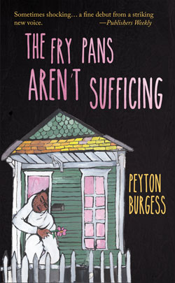

|
 Order direct from Lavender Ink |
ISBN 978-1935084884
160 pages: $16.00
May, 2016
Sometimes shocking and often strange, this is a fine debut from a striking new voice.
—Publishers Weekly
Read the entire review...
The Fry Pans Aren't Sufficing is funny, but this collection also defines an elemental loneliness. I know these people, their voices, their lives caught between earthy double-entendres in the fun-loving Crescent City. The hard-edged comedy of Burgess's narrative is shaped and honed, always merciful, and is peppered with dialogue that's reliable and masterfully executed. Personal and surreal, these poignant survival stories coax the reader into moments of shared feeling, into truth, reflection, and simple beauty.
—Yusef Komunyakaa, Pulitzer Prize winning author of The Emperor of Water Clocks and The Chameleon Couch
Peyton Burgess is an original—a gifted, entertaining, unprecedented original. These stories have style, heart, brains and a sense of humor, and I can't imagine a reader who wouldn't want to put this at the heart of the bookshelf. Just read it.
—Darin Strauss, National Book Award winning author of Half a Life
In these stories of physical and emotional dislocation, Peyton Burgess brings us one wonderfully blighted hero after another--hapless but not hopeless, pummeled by the ills of our society but lucid and funny and soldiering on. Burgess is a profoundly gifted writer who understands that for art to exist, there must be scars.
—Elizabeth McKenzie, author of The Portable Veblen
These stories will leave you in fits of laughter just as often as they'll break your heart. They'll seduce you, trick you, and leave you bewildered that you're just now discovering a talent like Burgess.
—Grant Ginder, author of People We Hate at the Wedding
Do people really want to be saved? Or do we love our lack? As we look for mothering in line at the post office or cook something humble with name brand equipment, are we preoccupied with re-shaping absence, battering and frying it over and over till insufficiency becomes the comfort food of our being? Our storyteller in The Fry Pans Aren't Sufficing thinks: "Mostly, I'm beginning to question my value." Indeed, the very deepest core of value is investigated in the midst of natural disaster, unfathomable personal loss, and systemic injustice in this collection of experientially accessible yet existentially confrontational stories. Burgess' casually sensual language and visceral relatability make lack all the more felt.
—Monica McClure, author of Tender Data
Cover art: Bianca Stone
Cover design: Benito Segovia